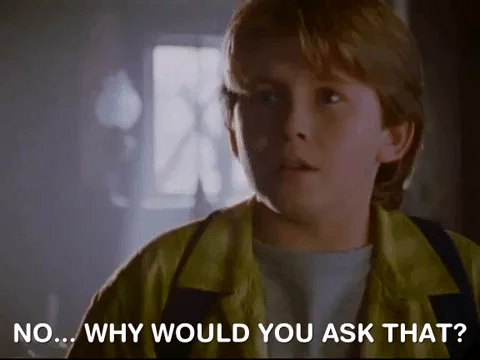
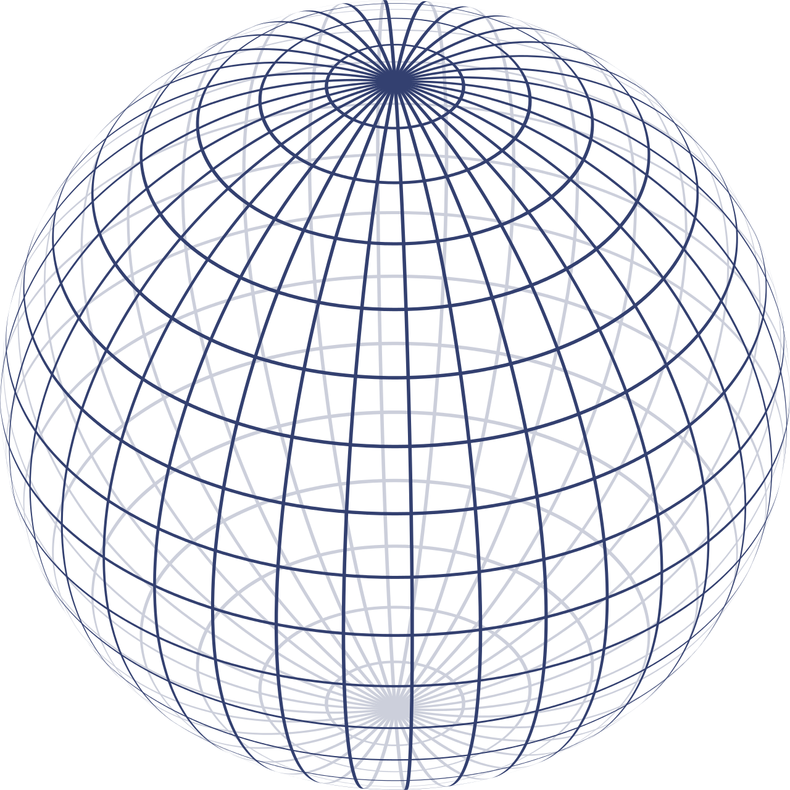
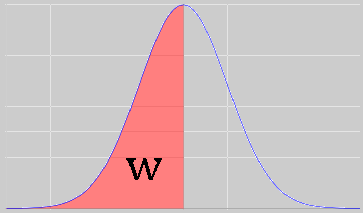
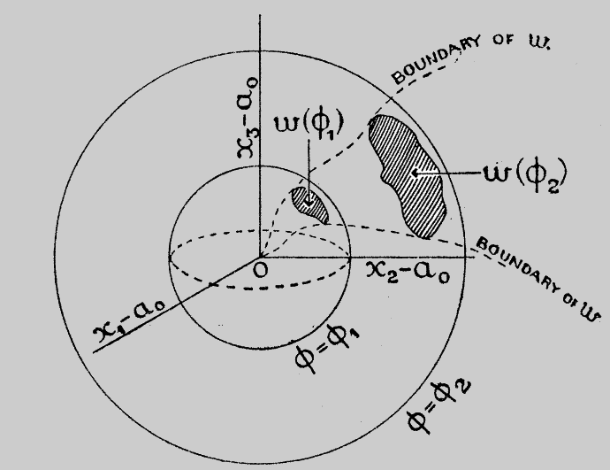

The Harms of
Historical Hyperbole
Dylan Spicker, PhD Candidate (Presented on June 30th 2021)
Who was George Dantzig?
An American Mathematician/Statistician who created the simplex algorithm for linear programming.
The Simplex Algorithm ENTER STAGE RIGHT
The Simplex Algorithm: "I can do that, fast and effectively! Even on computers from the 1940s!"
Operations Researchers: "Yay! Now we can solve all of these allocation problems effectively."
Good George Dantzig Will Hunting
Some liberties were taken...
This incredible clickbait ACTUALLY EXISTS! You won't believe the view count!
The Unsolved Homework Problems


What lessons are learned from this?

- George Dantzig was a genius.
- Positive thinking makes you into a genius.
- Geniuses finish their disserations in a week.
Those lessons are lies*.
* or at least not justified by the storied event.
Plot Twist
I used to kind of love Dantzig.
We need to make sure we always take care of ourselves. It is important to do what is right for us, always, regardless of any extrinsic forces. You matter.
Please, if you ever need to chat, email me or reach out. dylan.spicker@uwaterloo.ca
We need to do a better job at recognizing the impact of the environments that we create have on others. My talk is tongue-in-cheek and meant to be entertaining, but that is simply a tool at cutting through our inability to discuss these issues frankly. I promise I will get back to less serious slides next, but please take this to heart. If it is helpful, remember that other people feel like you do and want to be there to support you.
So What is My Take?
George Dantzig did what most graduate students do...
... and that is something we should celebrate.
Myth #1
These were very famous problems...

Myth #2
These problems were unsolved...
Myth #3
Many statisticians tried and failed to solve these...

Fun Math
Assume that $X_1, \dots, X_n$ are all i.i.d. $N(\mu, \sigma^2)$.
We wish to test $H_0: \mu = \mu_0$, versus the alternative, $H_1: \mu \neq \mu_0$.
Recall that the statistical power of a test is:\[\begin{aligned} \text{Power} &= \beta(\mu, \sigma) = P(\text{Reject }H_0; \mu, \sigma) \end{aligned} \]
Can you devise a test with power that is independent of $\sigma$?Generalized Polar Coordinate Transformation:
We can transform $\mathbb{R}^{n}$ to a space with $(r, \theta_2, \theta_3, \dots, \theta_n)$. The Jacobian of the transformation is given by $|\Delta_r| = r^{n-1}T(\mathbf{\theta})$.
Surface Area of a Hypersphere:
The surface area of $W_r$ is given by $\int\cdots\int_{W_r}|\Delta|d\theta_1\cdots d\theta_n = r^{n-1}K$, where $K$ is functionally independent of $r$.

Similar Region:
Given a parametric family of distributions, parameterized by $\theta \in \Theta$, $w$ is called similar to $W$ with size $\alpha$ if $P(\mathbf{x} \in w; \theta) = \alpha$ for all $\theta \in \Theta$.

Theorem 1 (Neyman-Pearson, 1933):
If $\mathbf{x}$ is normally distributed, then $w$ is similar to $W$ with size $\alpha$ if and only if, for all $r \geq 0$ we have $P(\mathbf{x} \in w_r | \mathbf{x} \in W_r) = \alpha$.

Step 1 (Assume that the region exists):
Suppose $w$ exists with $P(\mathbf{x} \in w; \mu_0) = \alpha$ and $P(\mathbf{x} \in w; \mu_1) = \beta$ for all $\sigma$. That is, $w$ is similar with size $\alpha$ similar with size $\beta$, to normal distributions parameterized by $\sigma$.
Step 2 (Invoke the Neyman-Pearson Theorem):
Define $W_r$, $W_p$, $w_r$, $w_p$. Then by Theorem 1 $P(\mathbf{x} \in w_r\mid\mathbf{x}\in W_r) = \alpha$ and $P(\mathbf{x} \in w_p\mid\mathbf{x}\in W_p) = \beta$.
Step 3 (Use some clever geometry):
Note that normal distributions are constant on hyperspheres around their means.
By (S2) we know that $w_r$ (and $w_p$) must be a constant proportion of the area of $W_r$ (and $W_p$). Therefore $\int\cdots\int_{w_r}|\Delta|d\theta_1\cdots d\theta_n = \alpha r^{n-1}K$ and $\int\cdots\int_{w_p}|\Delta_p|d\theta_1\cdots d\theta_n = \beta p^{n-1}K$.
Step 4 (Invoke Triangle Inequality)
The distance from $\mathbf{\mu_0}$ to $\mathbf{x}$ is $r$, from $\mathbf{\mu_1}$ to $\mathbf{x}$ is $p$, and from $\mathbf{\mu_0}$ to $\mathbf{\mu_1}$ is $L = \sqrt{n}|\mu_0 - \mu_1|$. By the triangle inequality we get $r \leq L + p$ and $p \leq r + L$.
If $g(t)$ is taken to be an arbitrary monotone function, then the inequality is preserved*.
* or flipped, if $g(t)$ is monotonically decreasing.
Step 5 (Integrate over our region):
Define $I_r(g) = \int_{w} g(r)dx_1\cdots dx_n$ which is transformed to $I_r(g) = \int_w g(r)|\Delta|drd\theta_2\cdots d\theta_n$. We can compute \[I_r(g) = \alpha K \int_{0}^\infty r^{n-1}g(r)dr.\] Also: $I_p(g) = \beta K \int_{0}^\infty p^{n-1}g(p)dp$ and $I_{p+L}(g) = \beta K \int_{0}^\infty g(p+L)p^{n-1}dp$.
Step 6 (Fix the monotone function):
Take $g(t) = \exp(-ct)$ for $c \geq 0$.
Then $g(r) \geq g(p + L) = g(p)g(L)$.
Integrating gives $I_r = \alpha K \frac{\Gamma(n)}{c^n}$, $I_p = \beta K \frac{\Gamma(n)}{c^n}$ and $I_{p+L} = \beta K e^{-cL} \frac{\Gamma(n)}{c^n}$.
Step 7 (Simplify and Arrive at Contradiction):
Simplifying (since $K > 0$) we get: $\alpha \geq \beta e^{-cL}$ and by symmetry $\beta \geq \alpha e^{-cL}$. Therefore, $\alpha = \beta$.
$\mathbf{x} = (x_1, \dots, x_n)$ is a sample point.
$w$ is the rejection region.
$W_r$ is an $n$-dimensional hypersphere (i.e. $\sum_{i=1}^n (x_i - \mu_0)^2 = r^2$).
$w_r$ is the intersection $W_r \bigcap w$.